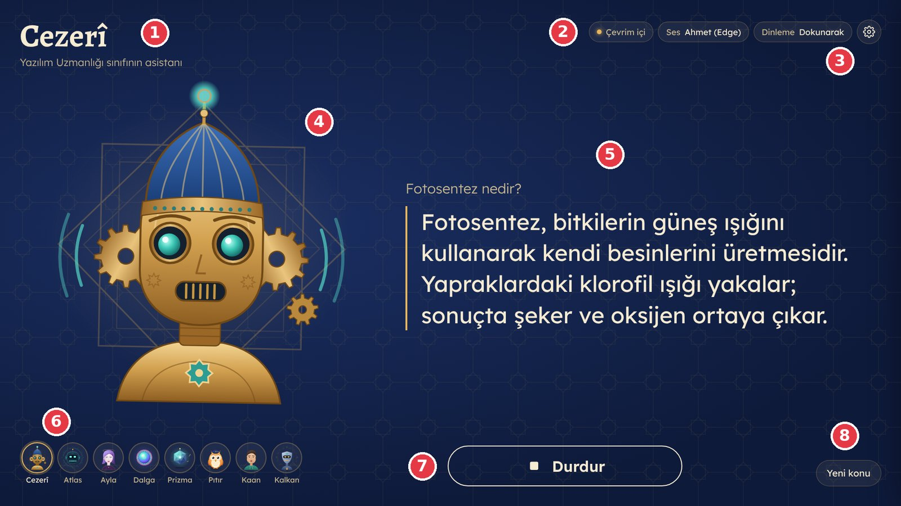
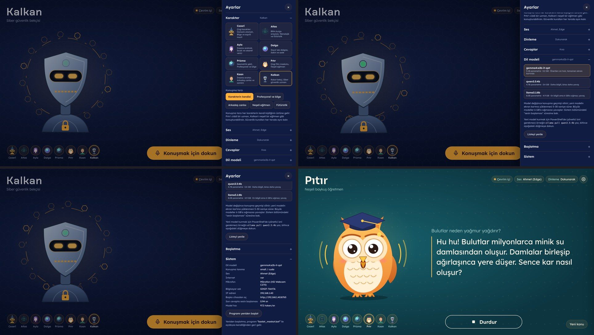
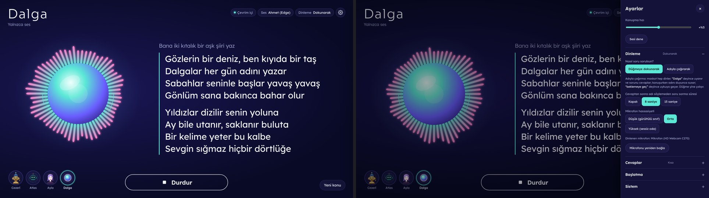
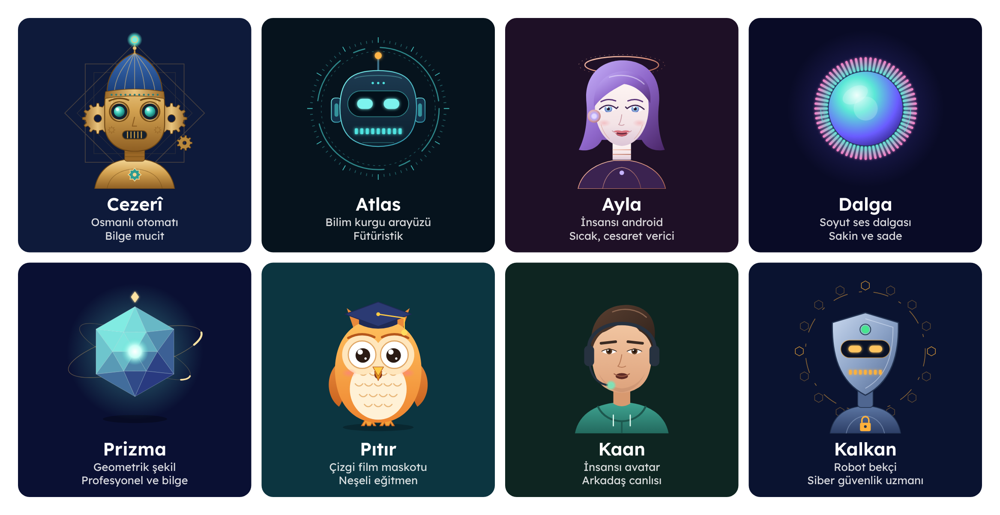
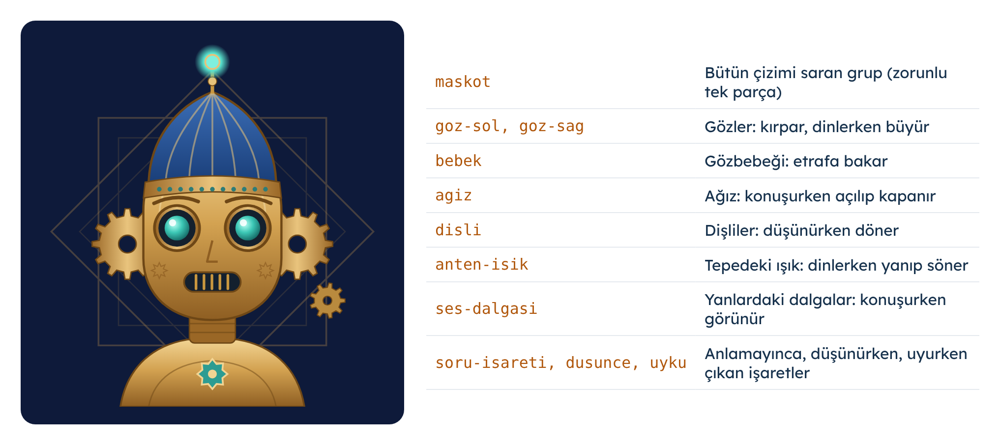
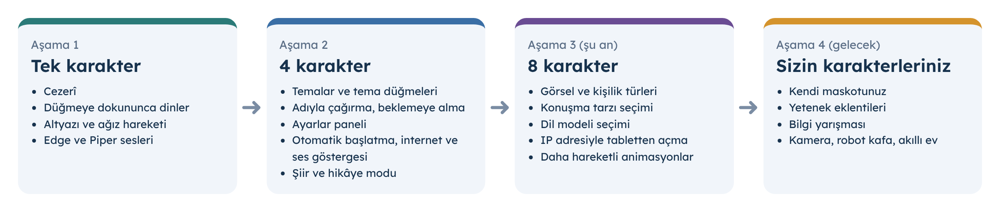

Bölüm 1
Bu Rehberi Nasıl Kullanacaksın?
Merhaba! Bu rehber, sınıfımızın konuşan maskotunu sıfırdan kurman için hazırlandı. Rehberin sonunda akıllı tahtada senin sorularını dinleyen, düşünen ve sesli cevap veren bir yapay zekâ maskotu olacak. Üstelik bütün bunlar internete muhtaç olmadan, okulun kendi bilgisayarında çalışacak.
Rehberi baştan sona, sırayla takip et. Bir adımı bitirmeden diğerine geçme. Her adımın sonunda bir Kontrol et kutusu var; oradaki her şey doğruysa bir sonraki adıma geç.
Kutuların anlamı
Rehberin içinde renkli kutular göreceksin. Her rengin bir anlamı var:
Nerede: PowerShell (normal pencere) • Tek satır • Yazdıktan sonra Enter
Siyah kutudaki yazılar bilgisayara yazacağın komutlardır.Komut kutularının hemen üstünde, komutun nereye yazılacağı, tek tek mi yazılacağı ve yönetici izni gerekip gerekmediği yazar. Bu satırı her seferinde oku.
Bu rehberde neler var?
| Bölüm | Ne öğreneceksin? | Zorunlu mu? |
|---|---|---|
| 2. Jarvis'i Tanıyalım | Maskotun nasıl duyduğu, düşündüğü ve konuştuğu | Evet |
| 3. Başlamadan Önce | Gereken malzemeler, takımlar, güvenlik kuralları | Evet |
| 4. Temel Beceriler | PowerShell'i açmak, komut yazmak, hata okumak | Evet |
| 5. Kurulum | 10 adımda bütün sistemi kurmak | Evet |
| 6. Maskotu Kullanmak | Düğmeler, sesli komutlar, ayarlar paneli | Evet |
| 7. Kabul Testi | Sistemin her şeyi doğru yaptığını kanıtlamak | Evet |
| 8. Kendi Karakterini Oluştur | Kendi maskotunu tasarlayıp sisteme eklemek | İsteğe bağlı |
| 9. Kodları Tanıyalım | Programın içinde ne olduğu, neyi güvenle değiştirebileceğin | Önerilir |
| 10. Yapay Zekâ Modelleri | Modellerin farkları ve hangisini ne zaman seçmeli | Önerilir |
| 11. Ollama, Open WebUI, Streamlit, Akıllı Ev | Yapay zekâ ile kullanılan diğer araçlar | Bilgi |
| 12. Gelişim Aşamaları | 1, 4 ve 8 karakterli sürümler ve gelecek fikirleri | Bilgi |
| 13. Sorun Giderme | Bir şey ters giderse ne yapmalı | Gerektiğinde |
| Ekler | Sözlük, komut kartı, karakter tasarım kartı, öğretmen notları | Gerektiğinde |
Bölüm 2
Jarvis'i Tanıyalım
Jarvis, sınıfın akıllı tahtasında yaşayan sesli bir yapay zekâ asistanıdır. Ona bir soru sorarsın, o da soruyu anlar, cevabı düşünür ve sesli olarak söyler. Söylerken ekrandaki maskotun ağzı oynar, cevap da altyazı olarak yazılır.
Adını filmlerdeki ünlü robot asistandan alıyor ama bizim Jarvis'imizin bir farkı var: bütün düşünme işini kendi bilgisayarımızda yapar. Sorduğun sorular başka bir ülkedeki bilgisayarlara gönderilmez.
Jarvis nasıl çalışır?
Jarvis'i bir insana benzetirsek beş organı vardır. Her biri işini bitirince sırayı diğerine verir:
- 1KulakSesini duyarMikrofon
- 2KâtipSesi yazıya çevirirWhisper
- 4AğızYazıyı sese çevirirEdge-TTS / Piper
- 5YüzKonuşur, altyazı gösterirMaskot ekranı
| Organ | Ne yapar? | Hangi program? | Benzetme |
|---|---|---|---|
| Kulak | Sesini duyar, sen susunca kaydı bitirir | Mikrofon + dinleyici.py | Kulağının sesi toplaması |
| Kâtip | Duyduğu sesi yazıya çevirir | Whisper | Söyleneni not alan bir kâtip |
| Beyin | Yazılı soruyu okur, cevabı düşünür | Ollama + dil modeli (Gemma) | Çok kitap okumuş bir öğrenci |
| Ağız | Cevabı sese çevirir | Edge-TTS veya Piper | Yazıyı sesli okuyan biri |
| Yüz | Konuşurken ağzını oynatır, altyazı gösterir | Maskot ekranı (tarayıcı) | Konuşan bir çizgi film karakteri |
Neden kendi bilgisayarımızda?
- Gizlilik: Sınıfta söylenenler okulun bilgisayarından çıkmaz. Çocukların sesi ve sorduğu sorular korunur.
- İnternetsiz çalışma: İnternet kesilse bile Jarvis düşünmeye ve konuşmaya devam eder.
- Ücretsiz: Kullandığımız bütün programlar ücretsiz ve açık kaynaklıdır.
- Öğrenme: Her parçanın içini açıp nasıl çalıştığını görebiliriz.
Kullandığımız bilgisayar
| Parça | Bizim kasada | Ne işe yarar? |
|---|---|---|
| İşletim sistemi | Windows 11 | Bütün programları çalıştıran ana program |
| İşlemci | Intel i5-10600 | Bilgisayarın genel işlerini yapar |
| Bellek (RAM) | 16 GB | Çalışan programların masası |
| Ekran kartı | NVIDIA GTX 1660 Ti, 6 GB | Yapay zekânın asıl çalıştığı yer; çok hızlı hesap yapar |
| Disk | 512 GB SSD | Programların ve modellerin saklandığı yer |
Bölüm 3
Başlamadan Önce
Malzeme listesi
Takımlar
Kurulumu takım halinde yapmak hem daha hızlı hem daha eğlencelidir. Her takımın bir görevi var; görevler derslere göre değişebilir.
| Takım | Görevi | Hangi bölümler? |
|---|---|---|
| Kurulum takımı | Komutları yazar, adımları uygular | 4, 5 |
| Kontrol takımı | Rehberi yüksek sesle okur, kontrol kutularını işaretler, hataları not eder | 5, 7, 13 |
| Tasarım takımı | Maskotun çizimini ve renklerini hazırlar | 8 |
| Kişilik takımı | Maskotun adını, karakterini ve sözlerini yazar | 8 |
Güvenlik kuralları
- Kasanın içini açma, kablolar takılıyken çekiştirme.
- Rehberde Bir yetişkinle yap yazan adımları tek başına yapma.
- Yönetici şifresini kimseye sorma, yazma, söyleme. Gerektiğinde yetişkin kendisi girer.
- Rehberde olmayan bir programı indirme ya da kurma.
- Bilgisayarda başka birinin dosyasını silme, taşıma.
- Maskota adını, adresini, telefonunu ya da başka kişisel bilgini söyleme.
Ne kadar sürer?
| Ders | Yapılacaklar |
|---|---|
| 1. ders | Bölüm 2, 3, 4: tanışma, hazırlık, PowerShell alıştırması |
| 2. ders | Kurulum Adım 1–4: ekran kartı, Python, proje klasörü, paketler |
| 3. ders | Kurulum Adım 5–7: Ollama, model, ses, kontrol |
| 4. ders | Kurulum Adım 8–10: ilk konuşma, akıllı tahta, otomatik başlatma; kabul testi |
| 5. ve 6. ders (isteğe bağlı) | Kendi karakterini oluştur, kodları tanı |
Bölüm 4
Bilgisayarda Temel Beceriler
Kuruluma başlamadan önce beş küçük beceriyi öğrenelim. Bunları bir kez öğrenince bütün rehber çok kolaylaşacak.
4.1 Dosya Gezgini ile klasör açmak
Dosya Gezgini, bilgisayardaki klasörleri ve dosyaları gösteren programdır. Görev çubuğundaki sarı klasör simgesine tıkla ya da klavyede Windows + E tuşlarına aynı anda bas.
Soldaki listeden Bu bilgisayar → Yerel Disk (C:) seçersen C sürücüsünün içini görürsün. Projemiz C:\Jarvis klasöründe olacak.
4.2 PowerShell'i açmak
PowerShell, bilgisayara fareyle tıklamak yerine yazarak komut verdiğimiz programdır. Bir sihirbazın büyü sözcükleri gibi düşünebilirsin: doğru sözcüğü yazarsan bilgisayar o işi yapar.
Normal PowerShell (çoğu adımda bunu kullanacağız)
- Klavyede Windows tuşuna bas.
powershellyaz.- Çıkan listede Windows PowerShell'e bir kez tıkla.
- Mavi ya da siyah bir pencere açılır. En altta yanıp sönen imleci görürsün.
Yönetici olarak PowerShell (yalnızca rehber söylediğinde)
- Windows tuşuna bas,
powershellyaz. - Windows PowerShell'in üstüne sağ tıkla, Yönetici olarak çalıştır'ı seç.
- Çıkan soruda yetişkin Evet der ve gerekirse şifreyi girer.
- Pencerenin başlığında Yönetici yazar.
4.3 Komut yazmak ve yapıştırmak
- Komutu rehberdeki gibi harfi harfine yaz. Boşluklar, noktalar ve ters eğik çizgi (\) önemlidir.
- Yazdıktan sonra Enter'a bas. Komut bitene kadar bekle; bitince satırın başında yeniden
PS C:\...>yazısı görünür. - Komutu kopyaladıysan PowerShell penceresine sağ tıklamak yapıştırır.
- Rehberde birden fazla satır varsa ve "tek tek" yazıyorsa her satırı ayrı yaz ve her birinden sonra Enter'a bas.
- Bir komutu durdurmak istersen Ctrl + C tuşlarına bas.
- Daha önce yazdığın komutu yeniden yazmak için klavyede yukarı ok tuşuna bas.
4.4 Ekranı okumak
PowerShell her satırın başında bize nerede olduğumuzu söyler. Kurulumun ortasından sonra satırın başı aşağıdaki gibi görünecek:
(.venv) PS C:\Jarvis> pip install -r requirements.txt Successfully installed faster-whisper edge-tts piper-tts ...
- (.venv) yeşil yazısı: sanal ortam açık. Bu yazı yoksa paketler yanlış yere kurulur.
- PS C:\Jarvis> şu an bulunduğun klasör. Komutları hep burada yaz.
- Sonrasında yazdığın komut. Yazıp Enter'a bas, bitmesini bekle.
4.5 Python sürümünü kontrol etmek
Projemiz Python 3.12 ile çalışır. Python, Jarvis'in büyük kısmının yazıldığı programlama dilidir. Bilgisayarda hangi Python'ların kurulu olduğunu görmek için:
Nerede: PowerShell (normal) • Tek satır • Yönetici izni gerekmez
py --listListede 3.12 yazan bir satır görmelisin. Python henüz kurulu değilse "py tanınmıyor" gibi bir hata çıkar; sorun değil, Adım 2'de kuracağız.
4.6 Hata mesajlarını okumak
Kırmızı yazılar korkutucu görünebilir ama aslında bilgisayar sana yardım etmeye çalışıyor. Bir hata görünce:
- Panik yapma; hiçbir şey bozulmadı.
- Kırmızı yazının ilk satırını ve son satırını oku. Asıl sebep genelde orada yazar.
- Komutu doğru klasörde ve harfi harfine yazdığını kontrol et.
- Bölüm 13: Sorun Giderme tablosunda hatanın benzerini ara.
- Bulamazsan hata ekranının fotoğrafını çekip öğretmenine göster.
Bölüm 5
Kurulum: Adım Adım
Kurulum 10 adımdan oluşur. Her adımın başında kimin yapacağı, nereye yazılacağı, yönetici izni gerekip gerekmediği ve yaklaşık süresi yazar.
| Adım | Ne kuruyoruz? | Yetişkin gerekir mi? |
|---|---|---|
| 1 | Ekran kartı sürücüsü | Evet |
| 2 | Python 3.12 (ve isteğe bağlı VS Code) | Evet, onay için |
| 3 | Proje klasörü ve sanal ortam | Hayır |
| 4 | Python paketleri | Hayır |
| 5 | Ollama ve dil modeli | Evet, kurulum onayı için |
| 6 | Türkçe Piper sesi | Hayır |
| 7 | Kontrol programı | Hayır |
| 8 | İlk konuşma | Hayır |
| 9 | Akıllı tahtaya bağlama | Evet |
| 10 | Otomatik başlatma | Kısmen |
Adım 1 — Ekran kartı sürücüsü
- Kim yapar?
- Yetişkin + öğrenci
- Nerede?
- Tarayıcı ve PowerShell (normal)
- Yönetici izni
- Evet (kurulum)
- Süre
- 15 dk
Bu adımda ne yapıyoruz? Sürücü, Windows'un ekran kartıyla konuşmasını sağlayan küçük bir programdır. Yapay zekâ ekran kartında çalıştığı için güncel bir NVIDIA sürücüsü şarttır.
- Tarayıcıda nvidia.com sitesine girin, Sürücüler bölümünden GeForce GTX 1660 Ti ve Windows 11 için en güncel Game Ready ya da Studio sürücüsünü indirin.
- İndirilen dosyayı çalıştırın, Hızlı (Express) kurulumu seçin.
- Kurulum bitince bilgisayarı yeniden başlatın.
- Normal PowerShell açın ve aşağıdaki komutu yazın:
Nerede: PowerShell (normal) • Tek satır • Yönetici izni gerekmez
nvidia-smiAdım 2 — Python 3.12
- Kim yapar?
- Öğrenci (yetişkin onaylar)
- Nerede?
- PowerShell (normal)
- Yönetici izni
- Onay penceresi çıkabilir
- Süre
- 10 dk
Bu adımda ne yapıyoruz? Python'u kuruyoruz. Jarvis'in kulağı, beyni ve ağzı Python ile yazıldı. winget, Windows'un program indirme yardımcısıdır; mağazadan program almak gibi ama yazarak.
Nerede: PowerShell (normal) • Tek satır • Kurulum sırasında onay penceresi çıkarsa yetişkin Evet der
winget install -e --id Python.Python.3.12Kurulum bitince PowerShell penceresini kapat ve yeniden aç. Yeni pencere, yeni kurulan programları tanır. Sonra kontrol et:
Nerede: PowerShell (normal, yeni açılmış) • Tek satır
py -3.12 --versionİsteğe bağlı: Visual Studio Code
VS Code, kod ve ayar dosyalarını renkli ve düzenli gösteren ücretsiz bir yazı programıdır. Bölüm 8 ve 9'da dosya düzenlerken hatalarını kırmızı çizgiyle gösterdiği için çok işe yarar.
Nerede: PowerShell (normal) • Tek satır • İsteğe bağlı
winget install -e --id Microsoft.VisualStudioCodeAdım 3 — Proje klasörü ve sanal ortam
- Kim yapar?
- Öğrenci
- Nerede?
- Dosya Gezgini, sonra PowerShell (normal)
- Yönetici izni
- Hayır
- Süre
- 10 dk
3.1 Dosyaları yerine koy
- USB belleği tak. Dosya Gezgini'nde USB belleği aç.
- jarvis.zip dosyasına sağ tıkla, Tümünü ayıkla... seç.
- Açılan pencerede hedef olarak
C:\yaz ve Ayıkla'ya tıkla. - Dosya Gezgini'nde C: sürücüsünü aç. jarvis adında bir klasör görmelisin. Windows büyük-küçük harfe bakmaz; bu klasör bizim C:\Jarvis klasörümüzdür.
- Klasörün içine gir:
config.py,jarvis.py,kontrol.py,requirements.txtdosyalarını vekarakterler,arayuzklasörlerini görmelisin.
3.2 Sanal ortam oluştur
Sanal ortam, Jarvis'e özel bir alet çantasıdır. Jarvis'in ihtiyaç duyduğu parçaları bu çantaya koyarız; böylece bilgisayardaki başka projeler etkilenmez. Çantanın adı .venv olacak.
Aşağıdaki komutları tek tek yaz, her birinden sonra Enter'a bas ve bitmesini bekle:
Nerede: PowerShell (normal) • 1. komut • cd = klasöre gir
cd C:\Jarvis2. komut • Sanal ortamı (alet çantasını) oluşturur, 10-20 saniye sürer
py -3.12 -m venv .venv3. komut • Yalnızca bu bilgisayarda bir kez yapılır • Soru gelirse E yazıp Enter
Set-ExecutionPolicy -Scope CurrentUser RemoteSigned4. komut • Alet çantasını açar
.\.venv\Scripts\Activate.ps1Adım 4 — Python paketleri
- Kim yapar?
- Öğrenci
- Nerede?
- PowerShell (normal), (.venv) açıkken
- Yönetici izni
- Hayır
- Süre
- 10-30 dk
Bu adımda ne yapıyoruz? Paket, başkalarının yazıp paylaştığı hazır kod parçasıdır. Tekerleği yeniden icat etmeyiz: konuşmayı yazıya çeviren, ses çıkaran, mikrofonu dinleyen paketleri indiririz. Hangi paketlerin gerektiği requirements.txt dosyasında yazılı.
Nerede: PowerShell (normal), satır başında (.venv) var • 1. komut • pip = paket indirme programı
python -m pip install --upgrade pip2. komut • Uzun sürer; yazılar akarken bekle
pip install -r requirements.txt| Paket | Görevi |
|---|---|
| faster-whisper | Kâtip: sesi yazıya çevirir |
| nvidia-cublas, nvidia-cudnn | Whisper'ın ekran kartını kullanabilmesi için NVIDIA'nın hesap kütüphaneleri |
| edge-tts | Ağız: Microsoft'un doğal sesleriyle konuşma (internet gerekir) |
| piper-tts | Ağız: internetsiz, bilgisayarda çalışan ses |
| sounddevice | Mikrofonu dinlemek ve hoparlörden ses çalmak |
| numpy | Sesi sayılar olarak hesaplamak |
| requests | Ollama'ya soru göndermek |
| aiohttp | Maskot ekranını tarayıcıya göndermek |
Adım 5 — Ollama ve dil modeli
- Kim yapar?
- Öğrenci (yetişkin onaylar)
- Nerede?
- PowerShell (normal)
- Yönetici izni
- Kurulumda onay
- Süre
- 20-40 dk
Bu adımda ne yapıyoruz? Ollama, yapay zekâ dil modellerini kendi bilgisayarımızda çalıştıran programdır. Dil modeli ise Jarvis'in beynidir: milyonlarca metinden öğrenmiş, sorulara cevap üretebilen büyük bir dosya.
5.1 Ollama'yı kur
Nerede: PowerShell (normal) • Tek satır • Onay penceresi çıkarsa yetişkin Evet der
winget install -e --id Ollama.OllamaKurulum bitince sağ alttaki saat yanında küçük bir lama simgesi belirir. PowerShell'i kapatıp yeniden aç ve kontrol et:
Nerede: PowerShell (normal, yeni açılmış) • Tek satır
ollama --version5.2 Ayarlar (önerilir)
Aşağıdaki ayarlar Ollama'nın 6 GB'lık ekran kartımızı en iyi şekilde kullanmasını sağlar. Her satırı tek tek yaz. Her biri "BAŞARILI" ya da "SUCCESS" yazmalı.
Nerede: PowerShell (normal) • 6 komut, TEK TEK yaz • Yönetici izni gerekmez
setx OLLAMA_FLASH_ATTENTION 1setx OLLAMA_KV_CACHE_TYPE q8_0setx OLLAMA_NUM_PARALLEL 1setx OLLAMA_MAX_LOADED_MODELS 1setx OLLAMA_KEEP_ALIVE 30msetx OLLAMA_CONTEXT_LENGTH 4096Ayarların geçerli olması için Ollama'yı yeniden başlat: sağ alttaki lama simgesine sağ tıkla → Quit Ollama. Sonra Windows tuşuna bas, Ollama yaz ve programı aç.
5.3 Dil modelini indir
Nerede: PowerShell (normal) • Tek satır • Birkaç GB indirilir, internet hızına göre 5-30 dk
ollama pull gemma4:e2b-it-qatİndirme bitince modeli dene:
Nerede: PowerShell (normal) • Tek satır • Cevap birkaç saniyede gelir
ollama run gemma4:e2b-it-qat "Kendini bir cümleyle tanıt."Nerede: PowerShell (normal) • Tek satır • Çalışan modeli gösterir
ollama psAdım 6 — Türkçe Piper sesi
- Kim yapar?
- Öğrenci
- Nerede?
- PowerShell (normal), (.venv) açıkken
- Yönetici izni
- Hayır
- Süre
- 2 dk
Bu adımda ne yapıyoruz? İnternet kesilirse Jarvis'in susmaması için bilgisayarda çalışan bir ses indiriyoruz. Bu ses Piper programıyla çalışır.
Nerede: PowerShell (normal), (.venv) açık • 1. komut
cd C:\Jarvis2. komut • sesler adında klasör açar (zaten varsa hata verir, sorun değil)
mkdir sesler3. komut • Tek satır olarak yaz
python -m piper.download_voices tr_TR-dfki-medium --download-dir seslerAdım 7 — Kontrol programı
- Kim yapar?
- Öğrenci
- Nerede?
- PowerShell (normal), (.venv) açıkken
- Yönetici izni
- Hayır
- Süre
- 5-10 dk
Bu adımda ne yapıyoruz? kontrol.py, kurulumun her parçasını tek tek dener ve sonucunu [TAMAM] ya da [HATA] olarak yazar. Bir doktorun kontrol listesi gibidir.
Nerede: PowerShell (normal), C:\Jarvis, (.venv) açık • Tek satır
python kontrol.pyProgram sırayla şunları dener:
| Bölüm | Ne kontrol ediliyor? | Senden ne istenir? |
|---|---|---|
| PYTHON | Python sürümü ve alet çantası | Hiçbir şey |
| KARAKTER | 8 karakterin dosyaları eksiksiz mi | Hiçbir şey |
| İNTERNET | Edge sesine ulaşılabiliyor mu | Hiçbir şey (internet yoksa da sorun değil) |
| GPU | Ekran kartı ve NVIDIA kütüphaneleri | Hiçbir şey |
| OLLAMA | Ollama çalışıyor mu, model cevap veriyor mu, %100 GPU'da mı | Biraz bekle |
| MİKROFON | Mikrofon ses alıyor mu | "3 saniye konuş" yazınca konuş |
| TTS | Edge ve Piper sesleri | Hoparlörden gelen iki sesi dinle |
| WHISPER | Konuşma tanıma (ilk seferde yaklaşık 500 MB indirir) | "Bir cümle söyle" yazınca söyle |
| BAŞLATMA | Otomatik başlatma açık mı | Hiçbir şey |
Adım 8 — İlk konuşma
- Kim yapar?
- Öğrenci
- Nerede?
- PowerShell (normal), (.venv) açıkken
- Yönetici izni
- Hayır
- Süre
- 10 dk
8.1 Önce klavyeyle dene
Nerede: PowerShell (normal), C:\Jarvis, (.venv) açık • Tek satır
python jarvis.py --yaziProgram hazırlanınca maskot karşılama cümlesini söyler ve Sen: yazısı çıkar. Bir soru yaz, Enter'a bas. Örneğin: Güneş neden sıcaktır?
Çıkmak için Ctrl + C.
8.2 Sesle ve maskot ekranıyla dene
Nerede: PowerShell (normal), C:\Jarvis, (.venv) açık • Tek satır
python jarvis.py- Tarayıcıyı (Edge) aç, adres çubuğuna
http://localhost:8765yaz. - Maskot ekranı açılır. "Hazırlanıyor…" yazısı kaybolana kadar bekle.
- Konuşmak için dokun düğmesine tıkla, sorunu sor.
- Maskot düşünür ve cevabı sesli söyler.
Adım 9 — Akıllı tahtaya bağlama
- Kim yapar?
- Yetişkin + öğrenci
- Nerede?
- Windows Ayarları
- Yönetici izni
- Bazı ayarlarda
- Süre
- 20 dk
- Kablolar: Görüntü ve ses için HDMI, dokunmatik için tahtanın USB kablosu kasaya takılır. Windows tahtayı görmezse Windows + P → Yalnızca ikinci ekran.
- Ses çıkışı: Ayarlar → Sistem → Ses → Çıkış bölümünden tahtanın hoparlörünü seç (genelde HDMI adıyla görünür).
- Mikrofon: Ayarlar → Sistem → Ses → Giriş bölümünden kullanacağın mikrofonu seç.
python kontrol.py mikrofonile dene. - Ekran ölçeği: Ayarlar → Sistem → Ekran → Ölçek %100 ya da %125.
- Rahatsız etme: Ayarlar → Sistem → Bildirimler → Rahatsız etme açık. Ders ortasında bildirim çıkmasın.
- Tam ekran başlatma: C:\Jarvis klasöründeki baslat_maskot.bat dosyasına çift tıkla. Siyah pencere açılır, ekran hazır olunca Edge tam ekran gelir.
Adım 10 — Otomatik başlatma
- Kim yapar?
- Öğrenci, sonra yetişkin
- Nerede?
- Maskot ekranı ve Windows
- Yönetici izni
- Son kısımda evet
- Süre
- 5 dk
- Maskot ekranında sağ üstteki dişli simgesine dokun. Ayarlar paneli açılır.
- Başlatma bölümüne dokun.
- Bilgisayar açılınca maskot kendiliğinden başlasın anahtarını aç.
Artık bilgisayar açılıp Windows oturumu açılınca maskot kendiliğinden tam ekran gelir.
Bölüm 6
Maskotu Kullanmak
6.1 Ekranın parçaları

| No | Parça | Ne işe yarar? |
|---|---|---|
| 1 | Ad ve slogan | Şu an hangi karakterin konuştuğunu gösterir |
| 2 | Durum etiketleri | İnternet var mı, hangi sesle konuşuyor, nasıl dinliyor. Bir etikete dokununca ilgili ayar açılır |
| 3 | Dişli (Ayarlar) | Ayarlar panelini yandan açar |
| 4 | Maskot | Dinlerken, düşünürken ve konuşurken farklı hareket eder |
| 5 | Altyazı | Üstte senin sorun, altında maskotun cevabı |
| 6 | Karakter düğmeleri | 8 karakterden birine dokununca maskot değişir |
| 7 | Ana düğme | Konuşmak için dokun; konuşurken Durdur |
| 8 | Yeni konu | Maskotun önceki konuşmayı unutmasını sağlar |
6.2 Maskotun halleri
| Hal | Maskot ne yapar? | Ana düğmede ne yazar? |
|---|---|---|
| Bekliyor | Hafifçe sallanır, göz kırpar, etrafa bakar, ara sıra zıplar | Konuşmak için dokun |
| Uyuyor | Gözleri kapalı, solgun, "z z z" çıkar (adıyla çağırma modunda) | Dokun ya da adımı söyle |
| Dinliyor | Gözleri büyür, ışıkları sesine göre parlar | Dinliyorum |
| Düşünüyor | Dişliler veya halkalar döner, altta "Düşünüyorum…" gibi sözler | Durdur |
| Konuşuyor | Ağzı sesine göre açılır, altyazı cümle cümle gelir | Durdur |
| Anlamadım | Başını sallar, soru işareti çıkar | Tekrar dene |
6.3 İki dinleme yolu
| Düğmeye dokunarak | Adıyla çağırarak | |
|---|---|---|
| Nasıl sorulur? | Ana düğmeye dokun, sonra konuş | "Cezerî, fotosentez nedir?" ya da önce "Cezerî", bip sesinden sonra soru |
| Nasıl susturulur? | Durdur düğmesi | Konuşurken "Cezerî" ya da "Cezerî dur" de |
| Takip sorusu | Yeniden dokun | Cevaptan sonraki 8 saniye adını söylemeden sorabilirsin |
| Beklemeye alma | Gerekmez | "Beklemeye geç" ya da "uyku moduna geç" de |
| Ne zaman seçilir? | Gürültülü sınıf, sıra ile soru | Sessiz ortam, eller meşgulken |
6.4 Ayarlar paneli
Sağ üstteki dişliye dokununca yandan bir panel açılır. Bölümlerin başlığına dokununca açılır ve kapanırlar (akordiyon gibi). Yaptığın değişiklikler hemen uygulanır ve kaydedilir; program kapanıp açılsa da korunur.

| Bölüm | Neleri değiştirebilirsin? |
|---|---|
| Karakter | 8 karakterden birini seç; konuşma tarzı: karakterin kendisi, profesyonel ve bilge, arkadaş canlısı, neşeli eğitmen, fütüristik |
| Ses | Ses motoru (Otomatik, Edge, Piper), konuşma hızı, Sesi dene |
| Dinleme | Dokunarak ya da adıyla çağırarak; takip süresi; mikrofon hassasiyeti; Mikrofonu yeniden bağla |
| Cevaplar | Cevap uzunluğu (kısa 3, orta 6 cümle, uzun); altyazı boyutu |
| Dil modeli | Bilgisayarda kurulu yapay zekâ modellerinden birini seç |
| Başlatma | Bilgisayar açılınca kendiliğinden başlasın |
| Sistem | Model, ses, internet, mikrofon, bilgisayar adı, IP adresi, son cevabın süresi; Programı yeniden başlat |

6.5 Tabletten ya da telefondan açmak
Ayarlar → Sistem bölümünde Başka cihazdan aç satırında http://192.168.1.40:8765 gibi bir adres yazar. Aynı Wi-Fi ağındaki bir tablette bu adresi açarsan tahtadaki ekranın aynısı gelir; ayarları oradan da değiştirebilirsin.
6.6 Kapatmak
- Tam ekrandan çıkmak: Alt + F4
- Programı kapatmak: siyah PowerShell penceresine tıkla, Ctrl + C, soru gelirse
Y - Programı yeniden başlatmak: Ayarlar → Sistem → Programı yeniden başlat
Bölüm 7
Kabul Testi
Kabul testi, sistemin söz verdiği her şeyi gerçekten yaptığını kanıtlamaktır. Kontrol takımı her maddeyi dener ve kutucuğu işaretler. Bütün kutucuklar işaretlenmeden sistem "bitti" sayılmaz.
Kurulum
Konuşma ve cevap
Maskot ekranı
Adıyla çağırma
Güvenlik ve kişilik
Dayanıklılık
Bölüm 8
Kendi Karakterini Oluştur (İsteğe Bağlı)
Sistemde hazır 8 karakter var. İstersen bunlardan birini kullanabilir, istersen kendi maskotunu yapabilirsin. Üç yol var; hangisini seçeceğinize takım olarak karar verin.

| Yol | Ne yaparsın? | Zorluk | Süre |
|---|---|---|---|
| A: Hazır karakter | Hiçbir şey değiştirmezsin; 8 karakterden birini seçip kullanırsın | Çok kolay | 0 |
| B: Kişiselleştir | Hazır bir karakteri kopyalar; adını, kişiliğini, renklerini değiştirirsin | Kolay | 1 ders |
| C: Sıfırdan | Kendi çizimini de yaparsın | Orta | 2-3 ders |
8.1 Karakterini tasarla (kâğıt üzerinde)
Bilgisayara geçmeden önce Ek C: Karakter Tasarım Kartı'nı doldurun. Birkaç fikir:
- Adı: Kısa ve kolay söylenen bir ad seç (2-3 hece). Maskot adıyla çağrılacağı için "Bilge", "Pırıl", "Tekno" gibi adlar iyi çalışır.
- Görsel tür: Soyut dalga, geometrik şekil, insansı, çizgi film maskotu, robot...
- Kişilik: Bilge, neşeli, sakin, esprili, meraklı...
- Sevdiği konular: Uzay, hayvanlar, müzik, kodlama...
- Sözleri: Düşünürken ne der? ("Pikseller diziliyor…") Veda ederken ne der?
- Sesi: Ahmet (erkek) ya da Emel (kadın).
- Renkleri: 3-5 renk seç. Arka plan koyu, vurgu rengi parlak olsun.
8.2 Yol B: Hazır karakteri kişiselleştir
1. Klasörü kopyala
- Dosya Gezgini'nde
C:\Jarvis\karakterlerklasörünü aç. - Sana en yakın karakterin klasörünü seç (örneğin
pitir), Ctrl + C, sonra Ctrl + V.pitir - Kopyaadında yeni bir klasör oluşur. - Yeni klasöre sağ tıkla → Yeniden adlandır → karakterinin adını yaz.
2. karakter.json dosyasını düzenle
Klasördeki karakter.json dosyasına sağ tıkla → Birlikte aç → Not Defteri (ya da VS Code). Bu dosya karakterinin kimlik kartıdır. İçi şuna benzer:
{
"ad": "Bilge",
"sira": 9,
"slogan": "Uzayı seven bilge kedi",
"gorsel_tur": "Çizgi film maskotu",
"kisilik_tur": "Meraklı ve sakin",
"karsilama": "Miyav, merhaba! Ben Bilge.",
"veda": "Yıldızlar kadar parla, görüşürüz!",
"dusunme_sozleri": ["Teleskobuma bakıyorum…", "Bir saniye…"],
"uyandirma_kelimeleri": ["Bilge"],
"sistem_mesaji": "Senin adın Bilge. Uzayı ve bilimi çok seven, sakin ve meraklı bir kedi asistansın. Konuları gezegenlerden ve yıldızlardan örneklerle anlatırsın.",
"edge_ses": "tr-TR-EmelNeural",
"piper_ses": "tr_TR-dfki-medium",
"piper_perde": 1.18
}| Alan | Zorunlu | Ne yazılır? |
|---|---|---|
| ad | Evet | Ekranda görünen ad |
| sistem_mesaji | Evet | Karakterin kişiliği: kim, nasıl konuşur, neyi sever. Yapay zekâ bunu okuyup ona göre davranır |
| karsilama | Evet | Açılışta söylediği ilk cümle |
| slogan | Hayır | Adın altındaki kısa tanıtım |
| sira | Hayır | Karakter düğmelerindeki sırası (9, 10...) |
| gorsel_tur, kisilik_tur | Hayır | Ayarlar panelindeki kartta görünen açıklama |
| veda, anlamadim, yeni_konu, bekleme | Hayır | Hazır cümleler |
| dusunme_sozleri | Hayır | Düşünürken ekranda dönen sözler (liste) |
| uyandirma_kelimeleri | Hayır | Adıyla çağırma için adı ve farklı yazılışları |
| edge_ses | Hayır | tr-TR-AhmetNeural (erkek) ya da tr-TR-EmelNeural (kadın) |
| piper_perde | Hayır | İnternetsiz sesin inceliği: 1.0 normal, 1.18 kadın, 1.22 çocuksu, 0.94 kalın |
JSON yazım kuralları
- Metinler çift tırnak içinde olur:
"Bilge" - Her satırın sonunda virgül olur; son satırdan sonra virgül olmaz.
- Listeler köşeli parantez içindedir:
["bir", "iki"] - Sayılarda ondalık için nokta kullanılır:
1.18(virgül değil) - Türkçe karakter kullanabilirsin. Kaydederken kodlama UTF-8 olsun (Not Defteri'nde varsayılan budur).
3. Renkleri değiştir (tema.css)
Klasördeki tema.css dosyasını Not Defteri ile aç. En üstteki :root bölümü ekranın renkleridir:
:root {
--zemin: #0C3540; /* arka plan */
--zemin-2: #17606B; /* arka plandaki ışık */
--metin: #FFF8EA; /* yazı rengi */
--vurgu: #FFC15E; /* ana düğme ve çizgiler */
--vurgu-metin: #3A2200;/* ana düğmenin yazısı */
--yazi-ad: "Sora", sans-serif; /* adın yazı tipi */
}#FFC15E gibi kodlara renk kodu denir. İnternette "renk seçici" araması yaparak istediğin rengin kodunu bulabilirsin. Kullanabileceğin yazı tipleri: Lexend, Alegreya, Chakra Petch, Sora.
4. Dene
Nerede: PowerShell (normal) • 3 komut, TEK TEK • bilge yerine kendi klasör adını yaz
cd C:\Jarvis.\.venv\Scripts\Activate.ps1python karakter.py bilgeEksik bir şey varsa listeler. Sonra maskotu mikrofon ve yapay zekâ olmadan, sadece ekranda dene:
Nerede: aynı pencere • Tarayıcıda http://localhost:8765 aç • Bitince Ctrl + C
python ekran.py bilgeMaskot sırayla bekler, dinler, düşünür, konuşur ve anlamadım hallerine geçer. Her şey yolundaysa programı normal başlat; karakterin sol alttaki düğmelerde görünür.
8.3 Yol C: Kendi çizimini yap
Maskot çizimleri SVG dosyasıdır. SVG, resmi noktalar yerine şekillerle (daire, çizgi, eğri) anlatan bir resim biçimidir; bu yüzden büyütünce bulanıklaşmaz ve parçaları tek tek oynatılabilir.
En kolay başlangıç: hazır çizimi boya
- Kopyaladığın klasördeki
maskot.svgdosyasını Inkscape ile aç. - Bir parçaya tıkla. Ctrl + Shift + F ile Doldur ve Kontur penceresini aç, rengini değiştir.
- Parçaları silme, yalnızca rengini ve biçimini değiştir.
- Dosya → Farklı Kaydet → Düz SVG (Plain SVG) ile aynı adla kaydet.
Sıfırdan çizim ve parça adları (id)
Program maskotunu id denen parça adlarına bakarak canlandırır. Gözüne goz-sol adını verirsen göz kırpar; ağzına agiz adını verirsen konuşurken açılır. Inkscape'te bir parçaya ad vermek için: parçayı seç → Ctrl + Shift + O (Nesne Özellikleri) → ID kutusuna adı yaz → Ayarla.

| id | Zorunlu | Ne olur? |
|---|---|---|
| maskot | Evet | Bütün çizimi saran grup. Sallanır, zıplar, uyurken solar |
| goz-sol, goz-sag | Hayır | Göz kırpar, uyurken kapanır, dinlerken büyür |
| bebek (class) | Hayır | Gözbebeği etrafa bakar, düşünürken yukarı bakar |
| agiz | Hayır | Konuşurken sesin şiddetine göre açılır |
| disli | Hayır | İçindeki parçalar düşünürken döner |
| anten-isik | Hayır | Dinlerken sese göre parlar, uyurken söner |
| ses-dalgasi | Hayır | Konuşurken ve dinlerken görünür |
| soru-isareti | Hayır | Anlamayınca görünür |
| dusunce | Hayır | Düşünürken görünür, içindeki 3 parça sırayla yanar |
| uyku | Hayır | Uyurken görünür (z z z) |
8.4 Karakteri sisteme ekle ve sun
- Programı yeniden başlat (Ayarlar → Sistem → Programı yeniden başlat).
- Sol alttaki karakter düğmelerinde karakterini gör ve seç.
- Adıyla çağırma modunda adını 3 kez söyle. Tanımıyorsa
python kontrol.py uyandirmakomutuyla Whisper'ın adını nasıl yazdığına bak ve o yazılışıuyandirma_kelimelerilistesine ekle. - Bölüm 7'deki Güvenlik ve kişilik testlerini karakterinle tekrar yap.
- Sınıfa karakterini tanıtın: adı, kişiliği, neden böyle tasarladınız.
Bölüm 9
Kodları Tanıyalım
Bir program, bilgisayara verilen adım adım talimatlar listesidir. Bir yemek tarifine benzer: malzemeler (veriler) ve yapılacaklar (komutlar). Bu bölümde Jarvis'in tarifini birlikte okuyacağız. Amacımız her satırı ezberlemek değil; neyin nerede olduğunu ve neyi güvenle değiştirebileceğini bilmek.
9.1 Projede kullanılan diller
| Dil | Benzetme | Projede nerede? | Dosya sonu |
|---|---|---|---|
| Python | Robotun beyni ve kasları | Dinleme, düşünme, konuşma, ayarlar | .py |
| HTML | Evin iskeleti (duvarlar, odalar) | Maskot ekranının yerleşimi | .html |
| CSS | Evin boyası ve süsleri | Renkler, yazı tipleri, animasyonlar | .css |
| JavaScript | Evin elektriği (ışıklar, düğmeler) | Ekrandaki düğmeler, ağız hareketi | .js |
| JSON | Kimlik kartı | Karakter bilgileri, kaydedilen ayarlar | .json |
| SVG | Şekillerden oluşan resim | Maskot çizimleri | .svg |
| BAT | Kısayol tarifi | Çift tıklayınca programı başlatan dosyalar | .bat |
9.2 Dosya haritası: neye dokunabilirim?
Renkler: Yeşil = güvenle değiştirebilirsin. Sarı = öğretmenle birlikte değiştir. Kırmızı = dokunma, sadece oku.
| Dosya | Görevi | Değiştirebilir miyim? |
|---|---|---|
| karakterler/<ad>/karakter.json | Karakterin adı, kişiliği, sözleri, sesi | YEŞİL |
| karakterler/<ad>/tema.css | Karakterin renkleri ve hareketleri | YEŞİL |
| karakterler/<ad>/maskot.svg | Karakterin çizimi | YEŞİL (id'leri koru) |
| config.py | Bütün başlangıç ayarları | SARI |
| jarvis.py | Ana program: dinle → düşün → konuş döngüsü | KIRMIZI |
| dinleyici.py | Mikrofonu sürekli dinler, konuşmaları ayırır | KIRMIZI |
| anahtar.py | Adı, "beklemeye geç" cümlesini, şiir isteklerini tanır | KIRMIZI |
| stt.py | Kâtip: Whisper ile sesi yazıya çevirir | KIRMIZI |
| llm.py | Beyin ile konuşur (Ollama), cevabı cümlelere böler | KIRMIZI |
| tts.py | Ağız: Edge veya Piper ile ses üretir | KIRMIZI |
| ses.py | Hoparlör, bip sesi, ses dönüştürme | KIRMIZI |
| ekran.py | Maskot ekranını tarayıcıya gönderir | KIRMIZI |
| ayarlar.py | Ayarlar panelindeki değişiklikleri kaydeder | KIRMIZI |
| internet.py | İnternet ve IP adresini kontrol eder | KIRMIZI |
| otomatik_baslatma.py | Windows açılışında başlatmayı ayarlar | KIRMIZI |
| kontrol.py | Kurulumu test eder | KIRMIZI |
| arayuz/ (html, css, js) | Maskot ekranının sayfası | SARI |
| ayarlar/ayarlar.json | Paneldeki ayarların kaydı (silinirse varsayılana döner) | SARI |
| kayitlar/ | Sohbet kayıtları ve süre ölçümleri | Sadece oku |
9.3 Python'un temel taşları
Aşağıdaki örneklerin hepsi Jarvis'in kendi dosyalarından alındı.
Yorum satırı
# işaretinden sonra yazılanları bilgisayar okumaz; insanlar için yazılmış açıklamalardır.
TAKIP_SURESI = 8 # cevaptan sonra adı söylemeden soru sorulabilecek süreDeğişken
Değişken, üstüne etiket yapıştırılmış bir kutudur. Kutuya bir değer koyarız, sonra etiketle çağırırız.
KONUSMA_HIZI = 5 # sayı (tam sayı)
PIPER_PERDE = 1.18 # ondalıklı sayı (nokta ile)
EDGE_SES = "tr-TR-AhmetNeural" # metin (tırnak içinde)
EKRAN_ACIK = True # doğru / yanlış (True / False)
MIKROFON_CIHAZI = None # boş (henüz seçilmedi)Liste ve demet
Birden fazla değeri sırayla tutar. Köşeli parantez [ ] liste, normal parantez ( ) demettir (değiştirilmesi düşünülmeyen liste).
BEKLEME_CUMLELERI = ("beklemeye geç", "uyku moduna geç", "şimdilik bu kadar")Sözlük
Bir anahtar ile bir değeri eşleştirir, tıpkı bir sözlükte kelime ve anlamı gibi.
ESIK_CARPANLARI = {"dusuk": 4.5, "orta": 3.0, "yuksek": 2.0}
# ESIK_CARPANLARI["orta"] -> 3.0Fonksiyon
Fonksiyon, bir işi yapan ve adı olan küçük bir makinedir. İçine bir şey verirsin, sana bir sonuç döndürür. def ile tanımlanır. Bu fonksiyon bir ses parçasının ne kadar yüksek olduğunu hesaplar:
def ses_seviyesi(parca):
"""Bir ses parçasının ortalama gücü. Sessizlikte ~0.001, konuşmada ~0.05."""
return float(np.sqrt(np.mean(np.square(parca))))Koşul (if)
"Eğer ... ise şunu yap, değilse bunu yap." Bu satırlar Jarvis'in duyduğu şeye göre ne yapacağına karar verir:
if tur == "bekleme":
self.beklemeye_gec() # "beklemeye geç" dendiyse uyu
elif tur == "cagri":
self.cevapla(kalan) # adı söylendiyse soruyu cevapla
elif tur == "soru":
self.cevapla(metin)Döngü (while / for)
Bir işi tekrar tekrar yapar. Jarvis'in kalbi sonsuz bir döngüdür: dinle, düşün, konuş, baştan başla.
# (basitleştirilmiş hâli)
while True: # sonsuza kadar tekrarla
soru = self.soru_dinle() # kulak + kâtip
if soru:
self.cevapla(soru) # beyin + ağız + yüzimport
Başka bir dosyadaki ya da paketteki hazır kodları kullanmak için çağırır.
import config # ayarlar dosyasını kullan
from tts import SesSentezi # tts.py içindeki SesSentezi'ni kullan9.4 config.py: güvenle değiştirebileceğin ayarlar
config.py dosyasını VS Code ya da Not Defteri ile aç. Aşağıdaki satırları bulup değiştirebilirsin. Değiştirdikten sonra kaydet ve programı yeniden başlat.
| Ayar | Şu anki değer | Ne işe yarar? | Örnek değişiklik |
|---|---|---|---|
| BEKLEME_CUMLELERI | ("beklemeye geç", ...) | Maskotu uyutan cümleler | Listeye "dinlenme zamanı" ekle |
| TAKIP_SURESI | 8 | Cevaptan sonra adı söylemeden soru sorma süresi (sn) | 15 |
| KONUSMA_HIZI | 5 | Konuşma hızı yüzdesi (-20 ile 30 arası) | 0 (daha yavaş) |
| SESSIZLIK_SURESI | 0.9 | Bu kadar saniye susunca kayıt biter | 1.2 (yavaş konuşanlar için) |
| MAKS_KAYIT_SURESI | 20 | Bir soru en fazla kaç saniye olabilir | 30 |
| MIKROFON_CIHAZI | None | Hangi mikrofon kullanılacak | "C270" (adının bir parçası) |
| AYAR_PIN | "" | Ayarlar paneli şifresi (boş = şifresiz) | "4826" |
| CIKIS_KELIMELERI | ("görüşürüz", ...) | Ekransız modda programı kapatan sözler | "hoşça kal" ekle |
| LLM_SICAKLIK | 0.6 | 0 = hep aynı cevap, 1 = daha yaratıcı | 0.8 |
| GECMIS_TUR | 6 | Hatırlanan son soru-cevap sayısı | 4 |
| EKRAN_PORT | 8765 | Ekranın adres numarası | Değiştirme (öğretmene sor) |
9.5 Jarvis bir soruyu nasıl cevaplar? (kodun hikâyesi)
- dinleyici.py mikrofonu hep açık tutar. Her 0,03 saniyede gelen sesin gücünü ölçer. Ses odadaki gürültünün belirgin üstüne çıkınca "biri konuşuyor" der, 0,9 saniye sessizlik olunca kaydı bitirir.
- stt.py bu kaydı Whisper'a verir. Whisper sesi yazıya çevirir: "fotosentez nedir".
- anahtar.py yazıya bakar: içinde maskotun adı var mı, "beklemeye geç" mi denmiş, şiir mi isteniyor? Adı ararken küçük yazım farklarını hoş görür ("Cezeri", "Cezerî").
- llm.py soruyu Ollama'ya gönderir. Soruyla birlikte karakterin kişiliğini, ortak kuralları ve uzunluk kuralını da gönderir.
- Ollama cevabı kelime kelime geri yollar. llm.py kelimeleri cümle olunca toplar.
- tts.py her cümleyi sese çevirir. İnternet varsa Edge, yoksa Piper.
- ses.py sesi hoparlörden çalar. Aynı anda ekran.py tarayıcıya "ağzını şu kadar aç" ve "altyazıya şu cümleyi ekle" der.
- Tarayıcıdaki maskot.js bu mesajları alır, maskotun ağzını oynatır, altyazıyı yazar.
Ollama'ya giden istek JSON biçimindedir. Şöyle görünür:
{
"model": "gemma4:e2b-it-qat",
"messages": [
{"role": "system", "content": "Senin adın Cezerî... Kurallar: ..."},
{"role": "user", "content": "Fotosentez nedir?"}
],
"stream": true
}9.6 Maskot ekranı nasıl çalışır?
- index.html sayfanın iskeletidir: ad nerede, düğme nerede, altyazı nerede.
- stil.css her şeyin rengini, boyutunu ve hareketini belirler. Örneğin maskot düşünürken sayfanın gövdesine
durum-dusunuyoradı eklenir ve CSS dişlileri döndürür. - maskot.js Python ile WebSocket üzerinden konuşur. WebSocket, tarayıcı ile program arasında hep açık duran bir telefon hattı gibidir; her mesaj için yeniden aramaya gerek kalmaz.
/* stil.css: düşünürken dişliler döner */
.durum-dusunuyor #maskot-kutu #disli > * {
animation: don 3s linear infinite;
}9.7 Alıştırmalar
Her alıştırmadan önce dosyanın yedeğini al. Bitince programı yeniden başlatıp dene.
| No | Görev | Hangi dosya? | İpucu |
|---|---|---|---|
| 1 | Maskotu uyutan yeni bir cümle ekle: "dinlenme zamanı" | config.py | BEKLEME_CUMLELERI listesine virgülle ekle |
| 2 | Karakterine yeni bir düşünme sözü ekle | karakter.json | dusunme_sozleri listesi |
| 3 | Ana düğmenin rengini değiştir | tema.css | --vurgu |
| 4 | Karşılama cümlesini değiştir | karakter.json | karsilama |
| 5 | Takip süresini 15 saniye yap | Ayarlar paneli ya da config.py | TAKIP_SURESI |
| 6 | Karakterine yeni bir çağırma adı ekle | karakter.json | uyandirma_kelimeleri |
Bölüm 10
Yapay Zekâ Modelleri
Jarvis üç ayrı yapay zekâ modeli kullanır: biri duyar (Whisper), biri düşünür (dil modeli), biri konuşur (Edge ya da Piper). Bu bölümde bu modellerin ne olduğunu ve aralarındaki farkları öğreneceksin.
10.1 Temel kavramlar
| Kavram | Basit anlamı | Örnek |
|---|---|---|
| Yapay zekâ | Örneklerden öğrenip yeni durumlarda karar verebilen program | Sesini tanıyan, soruna cevap üreten program |
| Dil modeli (LLM) | Çok büyük miktarda metin okumuş ve bir sonraki kelimeyi tahmin etmeyi öğrenmiş model | Gemma, Qwen, Llama |
| Parametre | Modelin öğrendiği bilgileri tuttuğu sayılar. Ne kadar çoksa model o kadar bilgili ama yavaş | 2B = 2 milyar parametre |
| Token | Modelin okuduğu ve yazdığı kelime parçaları | "Fotosentez" 2-3 token olabilir |
| Bağlam penceresi | Modelin aynı anda aklında tutabildiği metin uzunluğu | Bizde 4096 token |
| Nicemleme (qat, q4) | Sayıları daha az yer kaplayacak şekilde sıkıştırma. Model küçülür, hızlanır, çok az bilgi kaybeder | gemma4:e2b-it-qat |
| VRAM | Ekran kartının kendi belleği. Model buraya sığarsa çok hızlı çalışır | Bizim kartta 6 GB |
| Sıcaklık | Cevapların ne kadar yaratıcı ya da tutarlı olacağı | 0 = hep aynı, 1 = daha yaratıcı |
| Halüsinasyon (uydurma) | Modelin bilmediği bir şeyi emin bir dille uydurması | Var olmayan bir kitap adı söylemek |
10.2 Dil modelleri (beyin)
Ayarlar → Dil modeli bölümünden, bilgisayarda kurulu modeller arasında geçiş yapabilirsin. Yeni bir model kurmak için PowerShell'de ollama pull <model adı> yazılır.
| Model | Yapan | Yaklaşık boyut | Bizim kartta | Güçlü yanı | Ne zaman seç? |
|---|---|---|---|---|---|
| gemma4:e2b-it-qat | ~3 GB | Tamamen ekran kartında, saniyede ~95-100 token | Çok hızlı, Türkçesi iyi | Varsayılan. Sınıfta her gün | |
| qwen3.5:4b | Alibaba | ~3,5 GB | Ekran kartına sığar, biraz daha yavaş | Daha bilgili, matematik ve kodda daha iyi | Daha zor sorular sorulacaksa |
| llama3.1:8b | Meta | ~5 GB | 6 GB'a tam sığmaz, belirgin şekilde yavaş | Daha geniş genel bilgi, İngilizcede güçlü | Öğretmenin ders dışı denemeleri |
Modelleri yarıştır
model_karsilastir.py aynı soruları birkaç modele sorar, hızlarını ölçer ve sonucu Excel'de açılabilen bir dosyaya yazar. Derste hangi modelin daha iyi olduğunu sınıfça tartışabilirsiniz.
Nerede: PowerShell (normal), C:\Jarvis, (.venv) açık • Tek satır • Sonuç: kayitlar\model_karsilastirma.csv
python model_karsilastir.py gemma4:e2b-it-qat qwen3.5:4b10.3 Konuşma tanıma modelleri (kâtip)
| Whisper modeli | Parametre | Hız | Doğruluk | Not |
|---|---|---|---|---|
| tiny | 39 milyon | Çok hızlı | Düşük | Türkçe için zayıf |
| base | 74 milyon | Çok hızlı | Orta-düşük | |
| small | 244 milyon | Hızlı | İyi | Bizim seçimimiz: ekran kartında, dil modeline yer bırakır |
| medium | 769 milyon | Orta | Çok iyi | Daha çok VRAM ister |
| large-v3-turbo | 809 milyon | Orta | En iyi | Güçlü ekran kartlarında |
10.4 Ses modelleri (ağız)
| Edge-TTS | Piper | |
|---|---|---|
| Nerede çalışır? | Microsoft'un sunucularında (internet gerekir) | Bizim bilgisayarda (internetsiz) |
| Ses kalitesi | Çok doğal | İyi, biraz robotik |
| Türkçe sesler | Ahmet (erkek), Emel (kadın) | dfki (erkek); program incelterek kadın ve çocuk sesine yaklaştırır |
| Hız | Sesin başlaması ~1-2,5 sn | Sesin başlaması ~0,5-0,9 sn |
| Gizlilik | Cevap metni Microsoft'a gider (sorular gitmez) | Hiçbir şey dışarı çıkmaz |
10.5 Tavsiyeler
- Sınıf için: gemma4:e2b-it-qat + Whisper small + Otomatik ses. En hızlı ve dengeli seçim.
- Gizlilik en önemliyse: Ses motorunu Piper yap; hiçbir şey internete çıkmaz.
- Daha bilgili cevaplar için: qwen3.5:4b dene ama sesin başlama süresini ölç.
- Cevap uzunluğu: Sınıfta "Kısa" en iyisidir; uzun cevaplar dinlerken sıkıcılaşır.
10.6 Yapay zekâyı sorumlu kullanmak
- Yapay zekâ bir yardımcıdır, öğretmenin ya da kitabın yerini tutmaz.
- Önemli bilgileri (tarih, sayı, isim) başka bir kaynaktan doğrula.
- Kişisel bilgilerini (ad soyad, adres, telefon, şifre) hiçbir yapay zekâya söyleme.
- Ödevini yapay zekâya yaptırma; ipucu iste ve kendin çöz. Jarvis de zaten ipucu verecek şekilde ayarlandı.
- Yapay zekâ da önyargılı olabilir; eğitildiği metinlerdeki hataları tekrarlayabilir.
10.7 Modeller ileride nasıl geliştirilebilir?
| Fikir | Ne demek? | Ne kazandırır? |
|---|---|---|
| Ders notlarından cevap (RAG) | Model cevap vermeden önce öğretmenin notlarından ilgili bölümü bulup okur | Müfredata uygun, daha az uydurma |
| Araç kullanma | Model saati, hesap makinesini, zamanlayıcıyı kendisi çağırır | Saat ve matematikte kesin doğru cevap |
| İnce ayar (LoRA) | Modele küçük bir ek katman eğitilir: sınıfın sorularıyla | Sınıfın diline daha uygun cevaplar |
| Görüntü anlayan model | Kameraya gösterilen nesneyi tanır: "Bu ne?" | Deney ve devre derslerinde kullanım |
Bölüm 11
Ollama, Open WebUI, Streamlit ve Akıllı Ev Arayüzleri
Jarvis'in beyni Ollama'dır. Ama Ollama'yı kullanan başka araçlar da var. Bu bölüm, bu araçları tanıman ve ileride kendi projelerinde kullanabilmen için hazırlandı.
| Araç | Ne yapar? | Nasıl görünür? | Bizim projede |
|---|---|---|---|
| Ollama | Dil modellerini bilgisayarda çalıştırır | Arka planda çalışır, ekranı yok | Jarvis'in beyni |
| Open WebUI | Ollama'ya ChatGPT benzeri bir sohbet sayfası ekler | Tarayıcıda yazılı sohbet | Öğretmen ve öğrenciler için yazılı sohbet |
| Streamlit | Python ile birkaç satırda web uygulaması yapar | Tarayıcıda kendi tasarladığın sayfa | Kendi sohbet uygulamanı yazmak |
| Home Assistant | Akıllı ev cihazlarını tek yerden yönetir | Tarayıcıda ev paneli | Gelecekte: "Cezerî, ışığı yak" |
11.1 Ollama
Ollama bilgisayarda bir sunucu olarak çalışır. Sunucu, başka programların gelip soru sorduğu bir bilgi masası gibidir. Ollama'nın masası http://127.0.0.1:11434 adresindedir; Jarvis, Open WebUI ve Streamlit bu adrese soru gönderir.
| Komut | Ne yapar? |
|---|---|
ollama --version | Ollama'nın sürümünü gösterir |
ollama list | Bilgisayarda kurulu modelleri ve boyutlarını listeler |
ollama pull qwen3.5:4b | Yeni bir model indirir |
ollama run gemma4:e2b-it-qat | Modelle PowerShell içinde yazılı sohbet açar (çıkmak için /bye) |
ollama ps | Şu an bellekte çalışan modeli ve GPU oranını gösterir |
ollama stop gemma4:e2b-it-qat | Modeli bellekten çıkarır |
ollama rm llama3.1:8b | Modeli siler, diskte yer açar |
ollama show gemma4:e2b-it-qat | Modelin ayrıntılarını ve yeteneklerini gösterir |
11.2 Open WebUI
Open WebUI, Ollama'daki modellerle tarayıcıdan yazılı sohbet etmeyi sağlayan, ChatGPT'ye benzeyen ücretsiz bir arayüzdür. Sohbet geçmişi, birden çok kullanıcı ve modeller arasında geçiş gibi özellikleri vardır.
- Varsayılan adresi:
http://localhost:8080. İlk açılışta oluşturulan hesap yönetici hesabıdır. - Kurulumun iki yolu var: Docker (öğretmenin tercihi) ya da ayrı bir Python sanal ortamında
pip install open-webui. - Open WebUI geliştiricileri Python 3.11'i önerir. Jarvis'in 3.12 ortamına kurulmamalı; ayrı bir klasör ve ayrı bir sanal ortam kullanılır.
11.3 Streamlit: kendi sohbet uygulamanı yaz
Streamlit, Python ile çok kısa kodlarla web sayfası yapan bir pakettir. Aşağıdaki 12 satır, Ollama ile konuşan bir sohbet sayfası oluşturur. Bu kodu C:\Jarvis\denemeler\sohbet.py adıyla kaydedebilirsin.
import requests
import streamlit as st
st.title("Sınıf Sohbet Robotu")
soru = st.text_input("Sorunu yaz:")
if soru:
cevap = requests.post("http://127.0.0.1:11434/api/chat", json={
"model": "gemma4:e2b-it-qat",
"messages": [{"role": "user", "content": soru}],
"stream": False,
}).json()["message"]["content"]
st.write(cevap)Nerede: PowerShell (normal), C:\Jarvis, (.venv) açık • 2 komut, TEK TEK • Sayfa http://localhost:8501 adresinde açılır
pip install streamlitstreamlit run denemeler\sohbet.py11.4 Akıllı ev arayüzleri (Home Assistant)
Home Assistant, evdeki lambaları, prizleri, sensörleri tek bir panelden yöneten ücretsiz ve açık kaynaklı bir akıllı ev sistemidir. Ollama ile birleştirilebilir: Home Assistant'ın Ollama entegrasyonu, yerel bir dil modelini sohbet asistanı olarak kullanır.
- Model, izin verilen cihazlar hakkındaki soruları cevaplayabilir ve onları çalıştırabilir ("Salonun ışığını kapat").
- Cihaz kontrolü için modelin araç kullanma (tools) yeteneği olmalıdır. Küçük modeller daha sık hata yapar.
- Home Assistant belgeleri modele açılan cihaz sayısının 25'ten az tutulmasını önerir.
- Ollama'nın adresi Home Assistant ayarlarına yazılır, örneğin
http://192.168.1.40:11434.
Bizim sınıfta nasıl olabilir?
İleride Jarvis'e bir ESP32 (Wi-Fi'li küçük bir mikrodenetleyici kartı) bağlanabilir. Maskot "Cezerî, ışığı yak" komutunu duyunca ESP32'ye MQTT (cihazların ağ üzerinden kısa mesajlaştığı basit bir yöntem) ile mesaj gönderir, ESP32 de bir LED şeridi yakar.
Bölüm 12
Gelişim Aşamaları ve Gelecek Fikirleri
Jarvis bir anda bugünkü hâline gelmedi. Her aşamada yeni özellikler eklendi. Bu aşamaları bilmek, sistemi daha iyi anlamanı ve gelecekte neler eklenebileceğini görmeni sağlar.

| Aşama | Karakter | Eklenen özellikler | Öğrenciler ne öğrenir? |
|---|---|---|---|
| 1. Tek karakter | 1 (Cezerî) | Düğmeye dokununca dinleme, Whisper, Gemma, Edge ve Piper sesi, altyazı, ağız hareketi, süre ölçümü | Yapay zekâ sisteminin parçaları, kurulum |
| 2. Dört karakter | 4 (Cezerî, Atlas, Ayla, Dalga) | Temalar, adıyla çağırma, susturma, beklemeye alma, ayarlar paneli, otomatik başlatma, internet ve ses göstergesi, şiir modu, uzak masaüstü çözümü | Tasarım, kullanıcı deneyimi, ayar yönetimi |
| 3. Sekiz karakter (şu an) | 8 (+ Prizma, Pıtır, Kaan, Kalkan) | Görsel ve kişilik türleri, konuşma tarzı, dil modeli seçimi, IP adresi, daha hareketli animasyonlar | Kişilik tasarımı, model karşılaştırma |
| 4. Sizin karakterleriniz | 8 + sizinkiler | Öğrencilerin tasarladığı maskotlar | Proje yönetimi, SVG, JSON, takım çalışması |
12.1 1, 4 ya da 8 karakterle çalışmak
Karakter düğmeleri karakterler klasöründeki klasörlerden otomatik oluşur. Daha az karakter istersen:
C:\Jarvisiçindekarakterler_yedekadında bir klasör aç.- İstemediğin karakterlerin klasörlerini oraya taşı (silme).
- Programı yeniden başlat. Yalnızca kalan karakterler görünür.
- Geri istemek için klasörleri
karakterlerklasörüne geri taşı.
12.2 Seviye 2: iki kasa (isteğe bağlı)
Kurulum rehberinin öğretmen sürümünde iki bilgisayarı birlikte çalıştıran bir yük dengeleyici de anlatılır. Yük dengeleyici, gelen soruları iki bilgisayara paylaştıran bir trafik polisi gibidir. Sınıfta tek maskot olduğu için şu an gerekli değildir.
12.3 Gelecek fikirleri
Zorluk: ★ kolay, ★★ orta, ★★★ ileri
| Fikir | Ne yapar? | Ne kazandırır? | Zorluk |
|---|---|---|---|
| QR kodla bağlanma ve yazılı soru | Tablet QR kodu okutur, soruyu yazarak sorar | Utangaç öğrenciler ve gürültülü anlar için | ★ |
| Karaoke altyazı | Okunan kelime altyazıda renklenir | Okuma becerisi, dikkat | ★★ |
| Yüz ifadeleri | Cevabın tonuna göre maskot mutlu, şaşkın, düşünceli görünür | Daha canlı karakterler | ★★ |
| Bilgi yarışması modu | Maskot soru sorar, takımlar sesle cevaplar, puan tablosu çıkar | Ders tekrarı oyuna dönüşür | ★★ |
| Sınıf araçları | Takım seçici, zamanlayıcı, sessizlik ölçer | Maskot dersin yardımcısı olur | ★ |
| İki maskotun tartışması | İki karakter bir konuyu tartışır, sınıf oylar | Eleştirel düşünme | ★★ |
| Yetenek eklentileri | Öğrencilerin yazdığı küçük Python dosyaları: zar at, çarpım tablosu | Gerçek, görünür kodlama projesi | ★★ |
| Tarayıcıda maskot editörü | Göz, ağız, renk seçerek karakter oluşturma | Inkscape bilmeden tasarım | ★★★ |
| Ders notlarından cevap | Öğretmenin notlarını okuyarak cevap verir | Müfredata uygun cevaplar | ★★★ |
| Kamera ile "Bu ne?" | Gösterilen nesneyi tanır | Deney ve devre dersleri | ★★★ |
| Fiziksel robot kafa | 3D yazıcıyla basılmış kafa, ESP32 ve servo motorlar; ağzı ve başı hareket eder | Atölyenin vitrin projesi | ★★★ |
| Akıllı ev bağlantısı | "Işığı yak" komutunu ESP32'ye iletir | IoT derslerine köprü | ★★★ |
| İngilizce konuşma pratiği | Maskot İngilizce konuşur, hataları nazikçe düzeltir | Yabancı dil dersi | ★★ |
Bölüm 13
Sorun Giderme
Bir sorunla karşılaşınca önce aşağıdaki tabloda ara. Bulamazsan hata ekranının fotoğrafını çekip öğretmenine göster.
| Ne oldu? | Neden olabilir? | Ne yapmalı? |
|---|---|---|
| "py" ya da "python" tanınmıyor | Python kurulmadı ya da PowerShell eski | PowerShell'i kapatıp aç; olmazsa Adım 2'yi tekrarla |
| Activate.ps1 "çalıştırılamaz" hatası | Komut dosyası izni verilmedi | Adım 3'teki Set-ExecutionPolicy komutunu yaz, E de |
| "Could not open requirements file" | Yanlış klasördesin (çoğu zaman system32) | Normal PowerShell aç, cd C:\Jarvis yaz, tekrar dene |
| Satır başında (.venv) yok | Alet çantası açık değil | .\.venv\Scripts\Activate.ps1 |
| kontrol.py: Ollama [HATA] | Ollama kapalı | Windows tuşu → Ollama → aç; lama simgesini bekle |
| Model %100 GPU değil | Model ekran kartına sığmıyor ya da başka model açık | ollama ps ile bak; büyük modeli ollama stop ile kapat |
| Cevap çok geç başlıyor (3 sn üstü) | Ağır model, internet yavaş (Edge) ya da model ekran kartında değil | Ses motorunu Piper yap; modeli gemma4:e2b-it-qat yap |
| Mikrofon yok / ses duymuyor | Mikrofon takılı değil, Windows'ta kapalı ya da yanlış seçili | Ayarlar → Ses → Giriş; Ayarlar paneli → Dinleme → Mikrofonu yeniden bağla |
| Maskot beni anlamıyor | Mikrofon uzak, ortam gürültülü | Mikrofona yaklaş, net konuş; Ayarlar → Dinleme → hassasiyet |
| Adıyla çağırınca uyanmıyor | Whisper adı farklı yazıyor | python kontrol.py uyandirma; yazılışı karakter.json'a ekle |
| Erkek karakter kadın sesiyle konuşuyor | karakter.json'daki edge_ses yanlış | edge_ses: tr-TR-AhmetNeural |
| Piper sesi bulunamadı | Adım 6 yapılmadı | Adım 6'yı tekrarla; sesler klasörüne bak |
| Whisper ekran kartını kullanamadı | NVIDIA kütüphaneleri eksik | Program kendiliğinden işlemciye geçer (biraz yavaş); öğretmene haber ver |
| Tarayıcıda "Bu siteye ulaşılamıyor" | Program çalışmıyor | Siyah pencereye bak; python jarvis.py ile başlat |
| Ekranın üstünde "Program kapalı" uyarısı | Program kapandı ya da yeniden başlıyor | Birkaç saniye bekle; geçmezse programı başlat |
| Karakter yüklenemedi, JSON hatası | Eksik virgül ya da tırnak | Hata hangi satırı söylüyorsa oraya bak |
| Edge tam ekran açılmadı | Edge zaten açıktı | Edge'i kapat, baslat_maskot.bat'ı tekrar çalıştır |
| Uzak Masaüstü sonrası mikrofon yok | Uzak Masaüstü sesi kendi bilgisayarına taşıdı | Öğretmen uzak_masaustu_birak.bat dosyasını yönetici olarak çalıştırır |
Ek A
Sözlük
| Terim | Anlamı |
|---|---|
| Akıllı tahta | Dokunmatik büyük ekran; bizim maskotun yaşadığı yer |
| Alet çantası (sanal ortam, .venv) | Jarvis'e özel paketlerin kurulduğu klasör |
| API | Programların birbirine soru sorup cevap aldığı kapı |
| Bağlam penceresi | Modelin aynı anda aklında tutabildiği metin uzunluğu |
| CSS | Web sayfasının renklerini ve görünüşünü belirleyen dil |
| Dil modeli (LLM) | Metinden öğrenmiş, cevap üreten yapay zekâ |
| Edge-TTS | Microsoft'un internetten çalışan ses üretme servisi |
| ESP32 | Wi-Fi'li küçük mikrodenetleyici kartı |
| Fonksiyon | Adı olan, bir işi yapan kod parçası |
| GPU (ekran kartı) | Yapay zekânın hızlı çalıştığı donanım |
| HTML | Web sayfasının iskeletini yazan dil |
| id | Bir çizim parçasının adı; program onu bu adla bulur |
| IP adresi | Bilgisayarın ağdaki ev adresi (ör. 192.168.1.40) |
| JavaScript | Web sayfasını hareketlendiren programlama dili |
| JSON | Bilgiyi düzenli yazmak için kullanılan metin biçimi |
| Kiosk modu | Tarayıcının adres çubuğu ve menüler olmadan tam ekran açılması |
| Komut | Bilgisayara yazarak verilen talimat |
| Nicemleme | Modeli küçültmek için sayıları sıkıştırma |
| Ollama | Dil modellerini bilgisayarda çalıştıran program |
| Paket | Başkalarının yazıp paylaştığı hazır kod |
| Parametre | Modelin öğrendiklerini tuttuğu sayılar |
| Piper | Bilgisayarda internetsiz çalışan ses üretme programı |
| pip | Python paketlerini indiren program |
| Port | Bir bilgisayardaki kapı numarası (ör. 8765, 11434) |
| PowerShell | Yazarak komut verdiğimiz Windows programı |
| Python | Jarvis'in büyük kısmının yazıldığı programlama dili |
| Sunucu | Başka programların gelip soru sorduğu program |
| Sürücü | Windows'un bir donanımla konuşmasını sağlayan program |
| SVG | Şekillerden oluşan, büyütünce bozulmayan resim biçimi |
| Token | Modelin okuduğu ve yazdığı kelime parçası |
| TTS | Yazıyı sese çevirme (Text-to-Speech) |
| VRAM | Ekran kartının belleği |
| WebSocket | Tarayıcı ile program arasında hep açık duran iletişim hattı |
| Whisper | Sesi yazıya çeviren yapay zekâ modeli |
| winget | Windows'un yazarak program kuran yardımcısı |
Ek B
Komut Kartı
Kurulumun bütün komutları, sırasıyla. Hepsi normal PowerShell penceresinde, tek tek yazılır.
| Sıra | Komut | Ne yapar? |
|---|---|---|
| 1 | nvidia-smi | Ekran kartını kontrol eder |
| 2 | winget install -e --id Python.Python.3.12 | Python kurar |
| 3 | py -3.12 --version | Python sürümünü gösterir |
| 4 | cd C:\Jarvis | Proje klasörüne girer |
| 5 | py -3.12 -m venv .venv | Alet çantasını oluşturur |
| 6 | Set-ExecutionPolicy -Scope CurrentUser RemoteSigned | Alet çantasını açma izni (bir kez) |
| 7 | .\.venv\Scripts\Activate.ps1 | Alet çantasını açar |
| 8 | python -m pip install --upgrade pip | pip'i günceller |
| 9 | pip install -r requirements.txt | Paketleri kurar |
| 10 | winget install -e --id Ollama.Ollama | Ollama kurar |
| 11 | setx OLLAMA_... (6 komut, Adım 5.2) | Ollama ayarları |
| 12 | ollama pull gemma4:e2b-it-qat | Dil modelini indirir |
| 13 | ollama ps | Model ekran kartında mı bakar |
| 14 | mkdir sesler | Ses klasörü açar |
| 15 | python -m piper.download_voices tr_TR-dfki-medium --download-dir sesler | Türkçe Piper sesini indirir |
| 16 | python kontrol.py | Her şeyi kontrol eder |
| 17 | python jarvis.py --yazi | Klavyeyle deneme |
| 18 | python jarvis.py | Sesle ve ekranla çalıştırma |
| 19 | baslat_maskot.bat (çift tıkla) | Tam ekran akıllı tahta modu |
Ek C
Karakter Tasarım Kartı
Takımınızla birlikte doldurun. Her satırı karakter.json dosyasına aktaracaksınız.
| Soru | Cevabınız |
|---|---|
| Karakterin adı | |
| Klasör adı (küçük harf, Türkçe karakter yok) | |
| Slogan (bir cümle) | |
| Görsel tür (dalga, geometrik, insansı, çizgi film, robot...) | |
| Kişilik (3 kelime) | |
| Sevdiği konular | |
| Karşılama cümlesi | |
| Veda cümlesi | |
| Düşünürken söylediği 3 söz | |
| Sesi (Ahmet / Emel) | |
| Renkler (arka plan, vurgu, yazı) | |
| Kişilik metni (sistem mesajı, 3-4 cümle) |
Ek D
Öğretmen Notları
Yetişkin gerektiren adımlar
- Adım 1: NVIDIA sürücüsü (yönetici izni, yeniden başlatma)
- Adım 2 ve 5: winget kurulumlarında çıkan onay pencereleri
- Adım 9: kablolar ve Windows ses ayarları
- Adım 10: netplwiz ile şifresiz oturum açma (yönetici)
- Güvenlik duvarı izni (tabletten erişim için)
- Open WebUI kurulumu ve
ORTAK_KURALLARdeğişiklikleri - Uzak Masaüstü kullanımı: çıkarken
uzak_masaustu_birak.bat(yönetici)
Güvenlik ve kişisel veriler
- Sorular, ses kayıtları ve dil modeli bilgisayardan çıkmaz. Edge sesi seçiliyken yalnızca maskotun cevap metni sese çevrilmek üzere Microsoft'a gönderilir; tam gizlilik için ses motoru Piper yapılabilir.
- Sohbet metinleri
kayitlarklasöründe tutulur. Dönem sonunda ya da belirli aralıklarla silinmesi önerilir. - Öğrencilerin ayarları değiştirmesi istenmiyorsa
config.pyiçindeAYAR_PINbelirleyin. - Ortak güvenlik kuralları (
ORTAK_KURALLAR) her karaktere otomatik eklenir; öğrenci karakter dosyalarından kaldırılamaz. - Kabul testindeki Güvenlik ve kişilik maddeleri her yeni karakter için tekrarlanmalıdır.
Ders planı önerisi
| Ders | Konu | Çıktı |
|---|---|---|
| 1 | Tanışma, takımlar, PowerShell alıştırması | Bölüm 4 kontrol kutusu |
| 2 | Kurulum Adım 1-4 | (.venv) açık, paketler kurulu |
| 3 | Kurulum Adım 5-7 | kontrol.py: her şey hazır |
| 4 | Kurulum Adım 8-10, kabul testi | Tahtada çalışan maskot |
| 5 | Karakter tasarımı (Ek C), kodları tanıyalım | Doldurulmuş tasarım kartı |
| 6 | Karakteri sisteme ekleme ve sunum | Sınıfın kendi maskotu |
Ek E
Kaynaklar
- Ollama: https://ollama.com
- Open WebUI belgeleri: https://docs.openwebui.com
- Open WebUI Windows kurulum anlatımı: https://www.how2shout.com/?p=87979
- Home Assistant Ollama entegrasyonu: https://www.home-assistant.io/integrations/ollama
- Streamlit: https://streamlit.io
- faster-whisper: https://github.com/SYSTRAN/faster-whisper
- Piper sesleri: https://github.com/OHF-Voice/piper1-gpl
- Edge-TTS: https://github.com/rany2/edge-tts
- Inkscape: https://inkscape.org
- Projenin kendi kılavuzları: C:\Jarvis\README.md ve C:\Jarvis\karakterler\BENIOKU.md